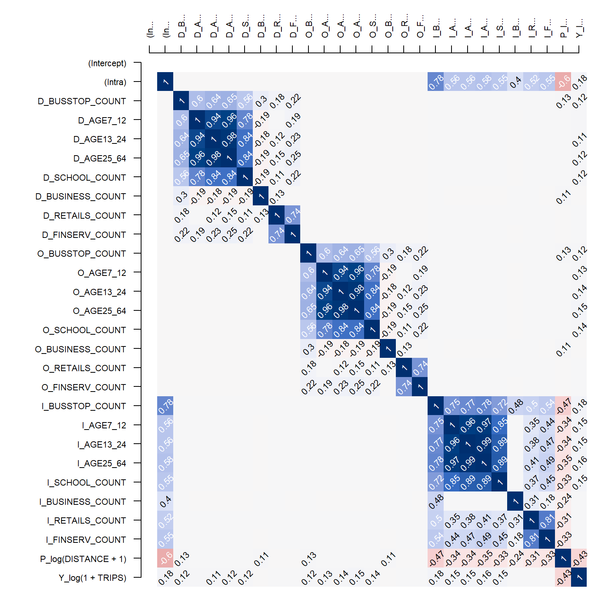
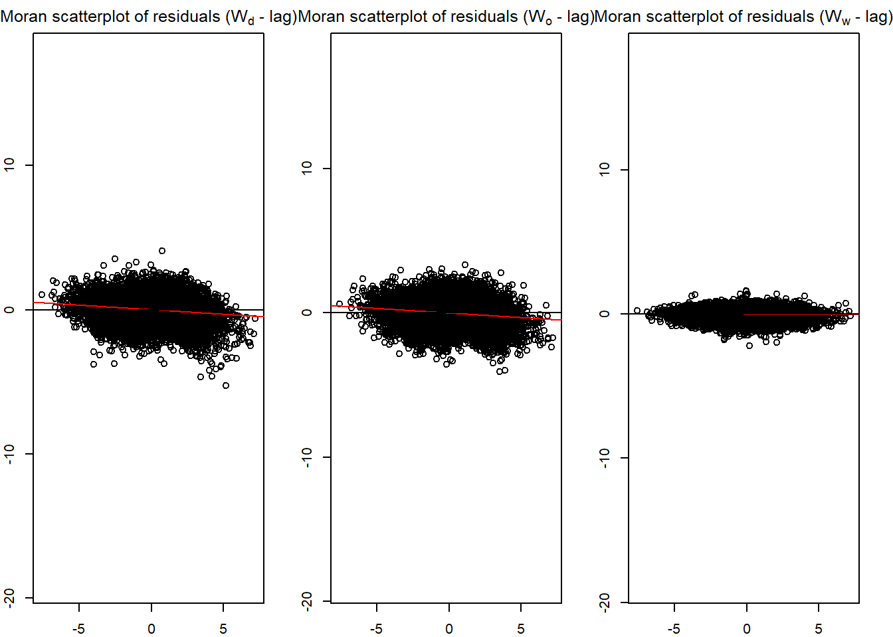
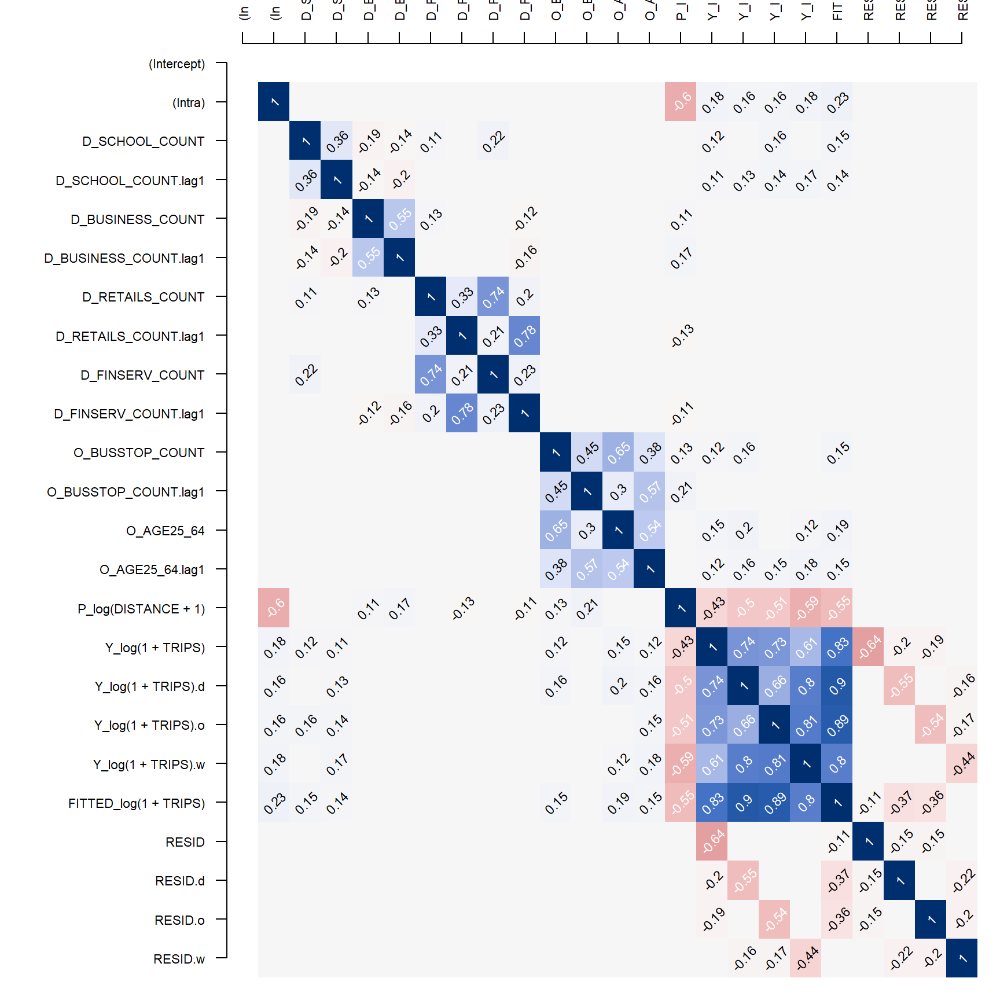

devtools::install_github("LukeCe/spflow")In-class Ex 5
Spatial Econometrics
1 Loading R Packages
A key package used is spflow, which allows us to estimate spatial econometric models, designed to exploit the relational structure of ~~flow data
options(repos = c(CRAN = "https://cran.rstudio.com/"))
pacman::p_load(tmap, sf, spdep, sp, Matrix,
spflow, knitr, tidyverse)2 Importing the data
To use the functions in spflow package, we need the following R data types:
- Spatial weights
- O-D flow data as a tibble dataframe
- Explanatory variables as a tibble dataframe
mpsz <- st_read(dsn = "data/geospatial",
layer = "MPSZ-2019") %>%
st_transform(crs = 3414)busstop <- st_read(dsn = "data/geospatial",
layer = "BusStop") %>%
st_transform(crs = 3414)mpsz_busstop <- st_intersection(busstop, mpsz) %>%
select(BUS_STOP_N, SUBZONE_C) %>%
st_drop_geometry()Spatial weights
Calculate centroid of each zubzone area
centroids <- suppressWarnings({
st_point_on_surface(st_geometry(mpsz_busstop))
})Create a list of the following spatial weights metrics:
- contiguity weights
- distance-based weights
- k-nearest neighbours
mpsz_nb <- list(
"by_contiguity" = ploy2nb(mpsz_busstop),
"by_distance" = dnearneigh(centroids,
d1 = 0,
d2 = 5000),
"by_knn" = knn2nb(knearneigh(centroids, 3))
)3 Retrieving prepared dataframes
mpsz_nb <- read_rds("data/rds/mpsz_nb.rds")
mpsz_flow <- read_rds("data/rds/mpsz_flow.rds")
mpsz_var <- read_rds("data/rds/mpsz_var.rds")4 Creating spflow network class data
This combines neighbourhood links and flow data
mpsz_net <- spflow_network(
id_net = "sg",
node_neighborhood =
nb2mat(mpsz_nb$by_contiguity),
node_data = mpsz_var,
node_key_column = "SZ_CODE"
)mpsz_net_pairs <- spflow_network_pair(
id_orig_net = "sg",
id_dest_net = "sg",
pair_data = mpsz_flow,
orig_key_column = "ORIGIN_SZ",
dest_key_column = "DESTIN_SZ"
)
mpsz_net_pairsSpatial network pair with id: sg_sg
--------------------------------------------------
Origin network id: sg (with 313 nodes)
Destination network id: sg (with 313 nodes)
Number of pairs: 97969
Completeness of pairs: 100.00% (97969/97969)
Data on node-pairs:
DESTIN_SZ ORIGIN_SZ DISTANCE TRIPS
1 RVSZ05 RVSZ05 0 67
314 SRSZ01 RVSZ05 305.74 251
627 MUSZ02 RVSZ05 951.83 0
940 MPSZ05 RVSZ05 5254.07 0
1253 SISZ01 RVSZ05 4975 0
1566 BMSZ17 RVSZ05 3176.16 0
--- --- --- --- ---
96404 YSSZ07 TSSZ06 26972.97 0
96717 BSSZ01 TSSZ06 25582.48 0
97030 AMSZ05 TSSZ06 26714.79 0
97343 AMSZ04 TSSZ06 27572.74 0
97656 BSSZ02 TSSZ06 26681.7 0
97969 TSSZ06 TSSZ06 0 270mpsz_multi_net <- spflow_network_multi(mpsz_net,
mpsz_net_pairs)
mpsz_multi_netCollection of spatial network nodes and pairs
--------------------------------------------------
Contains 1 spatial network nodes
With id : sg
Contains 1 spatial network pairs
With id : sg_sg
Availability of origin-destination pair information:
ID_ORIG_NET ID_DEST_NET ID_NET_PAIR COMPLETENESS C_PAIRS C_ORIG C_DEST
sg sg sg_sg 100.00% 97969/97969 313/313 313/3134.1 Correlation Analysis
cor_formula <- log(1 + TRIPS) ~
BUSSTOP_COUNT +
AGE7_12 +
AGE13_24 +
AGE25_64 +
SCHOOL_COUNT +
BUSINESS_COUNT +
RETAILS_COUNT +
FINSERV_COUNT +
# P = impedence
P_(log(DISTANCE +1))
cor_mat <- pair_cor(
mpsz_multi_net,
spflow_formula = cor_formula,
add_lags_x = FALSE)
# creating labels for variables
colnames(cor_mat) <- paste0(
substr(
colnames(cor_mat), 1, 3), "...")
# parse to construct correlation matrix
cor_image(cor_mat)
5 Model Callibration
There are 3 key model callibrations available:
- Maximum Likelihood Estimation (MLE)
- Spatial Two-stage Least Squares (S2SLS)
- Bayesian Markov Chain Monte Carlo (MCMC)
5.1 Base Model based on MLE
base_model <- spflow(
spflow_formula = log(1 + TRIPS) ~
# origin
O_(BUSSTOP_COUNT +
AGE25_64) +
# destination
D_(SCHOOL_COUNT +
BUSINESS_COUNT +
RETAILS_COUNT +
FINSERV_COUNT) +
P_(log(DISTANCE +1)),
spflow_networks = mpsz_multi_net
)
base_model--------------------------------------------------
Spatial interaction model estimated by: MLE
Spatial correlation structure: SDM (model_9)
Dependent variable: log(1 + TRIPS)
--------------------------------------------------
Coefficients:
est sd t.stat p.val
rho_d 0.680 0.004 192.554 0.000
rho_o 0.678 0.004 187.729 0.000
rho_w -0.396 0.006 -65.588 0.000
(Intercept) 0.410 0.065 6.265 0.000
(Intra) 1.313 0.081 16.263 0.000
D_SCHOOL_COUNT 0.017 0.002 7.885 0.000
D_SCHOOL_COUNT.lag1 0.002 0.004 0.551 0.582
D_BUSINESS_COUNT 0.000 0.000 3.015 0.003
D_BUSINESS_COUNT.lag1 0.000 0.000 -0.249 0.803
D_RETAILS_COUNT 0.000 0.000 -0.306 0.759
D_RETAILS_COUNT.lag1 0.000 0.000 0.152 0.879
D_FINSERV_COUNT 0.002 0.000 6.787 0.000
D_FINSERV_COUNT.lag1 -0.002 0.001 -3.767 0.000
O_BUSSTOP_COUNT 0.002 0.000 6.806 0.000
O_BUSSTOP_COUNT.lag1 -0.001 0.000 -2.364 0.018
O_AGE25_64 0.000 0.000 7.336 0.000
O_AGE25_64.lag1 0.000 0.000 -2.797 0.005
P_log(DISTANCE + 1) -0.050 0.007 -6.792 0.000
--------------------------------------------------
R2_corr: 0.6942936
Observations: 97969
Model coherence: ValidatedOverall Model results show that:
R2_corr: 0.6942941
The model is able to account for ~69% of variations
The model results also reveal statistics and spatial lag statistics for each explanatory variable. For instance,
D_SCHOOL_COUNT p-value = 0.000
D_SCHOOL_COUNT.lag1 p-value = 0.581
The above statistics reveal that school count within a zone is statistically significant, but the spatial lag variable has p-value > 0.05, which means that neighbouting areas’ school count does not contribute to the overall ‘attractiveness’ of the area.
6 Model Diagnostics
6.1 Moran Scatterplot - Residuals disgnostic
old_par <- par(mfrow = c(1, 3),
mar = c(2, 2, 2, 2))
spflow_moran_plots(base_model)
6.2 Rerun correlation matrix with base_model
corr_residual <- pair_cor(base_model)
colnames(corr_residual) <- substr(colnames(corr_residual),1,3)
cor_image(corr_residual)
6.3 Model Control - fine-tuning unconstrained Model
# Create formula as list and save as variable
spflow_formula <- log(1 + TRIPS) ~
# origin
O_(BUSSTOP_COUNT +
AGE25_64) +
# destination
D_(SCHOOL_COUNT +
BUSINESS_COUNT +
RETAILS_COUNT +
FINSERV_COUNT) +
P_(log(DISTANCE +1))
# model control to define methods
model_control <- spflow_control(
estimation_method = "mle",
#model_1 is unconstrained
model = "model_1")
mle_model1 <- spflow(
spflow_formula,
spflow_networks = mpsz_multi_net,
estimation_control = model_control)
mle_model1--------------------------------------------------
Spatial interaction model estimated by: OLS
Spatial correlation structure: SLX (model_1)
Dependent variable: log(1 + TRIPS)
--------------------------------------------------
Coefficients:
est sd t.stat p.val
(Intercept) 11.384 0.069 164.255 0.000
(Intra) -6.006 0.112 -53.393 0.000
D_SCHOOL_COUNT 0.093 0.003 28.599 0.000
D_SCHOOL_COUNT.lag1 0.255 0.006 44.905 0.000
D_BUSINESS_COUNT 0.001 0.000 10.036 0.000
D_BUSINESS_COUNT.lag1 0.003 0.000 18.274 0.000
D_RETAILS_COUNT 0.000 0.000 -1.940 0.052
D_RETAILS_COUNT.lag1 0.000 0.000 -2.581 0.010
D_FINSERV_COUNT 0.005 0.000 10.979 0.000
D_FINSERV_COUNT.lag1 -0.016 0.001 -17.134 0.000
O_BUSSTOP_COUNT 0.014 0.001 25.865 0.000
O_BUSSTOP_COUNT.lag1 0.015 0.001 21.728 0.000
O_AGE25_64 0.000 0.000 14.479 0.000
O_AGE25_64.lag1 0.000 0.000 14.452 0.000
P_log(DISTANCE + 1) -1.281 0.008 -165.327 0.000
--------------------------------------------------
R2_corr: 0.2831458
Observations: 97969
Model coherence: Validated6.4 Model control - check intra-zonal model (model 8)
# Create formula as list and save as variable
spflow_formula <- log(1 + TRIPS) ~
# origin
O_(BUSSTOP_COUNT +
AGE25_64) +
# destination
D_(SCHOOL_COUNT +
BUSINESS_COUNT +
RETAILS_COUNT +
FINSERV_COUNT) +
P_(log(DISTANCE +1))
# model control to define methods
model_control <- spflow_control(
estimation_method = "mle",
#model_1 is unconstrained
model = "model_8")
mle_model8 <- spflow(
spflow_formula,
spflow_networks = mpsz_multi_net,
estimation_control = model_control)
mle_model8--------------------------------------------------
Spatial interaction model estimated by: MLE
Spatial correlation structure: SDM (model_8)
Dependent variable: log(1 + TRIPS)
--------------------------------------------------
Coefficients:
est sd t.stat p.val
rho_d 0.689 0.003 196.831 0.000
rho_o 0.687 0.004 192.214 0.000
rho_w -0.473 0.003 -142.469 0.000
(Intercept) 1.086 0.049 22.275 0.000
(Intra) 0.840 0.075 11.255 0.000
D_SCHOOL_COUNT 0.019 0.002 8.896 0.000
D_SCHOOL_COUNT.lag1 0.019 0.004 5.130 0.000
D_BUSINESS_COUNT 0.000 0.000 3.328 0.001
D_BUSINESS_COUNT.lag1 0.000 0.000 1.664 0.096
D_RETAILS_COUNT 0.000 0.000 -0.414 0.679
D_RETAILS_COUNT.lag1 0.000 0.000 -0.171 0.864
D_FINSERV_COUNT 0.002 0.000 6.150 0.000
D_FINSERV_COUNT.lag1 -0.003 0.001 -4.601 0.000
O_BUSSTOP_COUNT 0.003 0.000 7.676 0.000
O_BUSSTOP_COUNT.lag1 0.000 0.000 0.552 0.581
O_AGE25_64 0.000 0.000 6.870 0.000
O_AGE25_64.lag1 0.000 0.000 -0.462 0.644
P_log(DISTANCE + 1) -0.125 0.005 -22.865 0.000
--------------------------------------------------
R2_corr: 0.6965974
Observations: 97969
Model coherence: ValidatedResults reveal:
R2_corr: 0.6965974